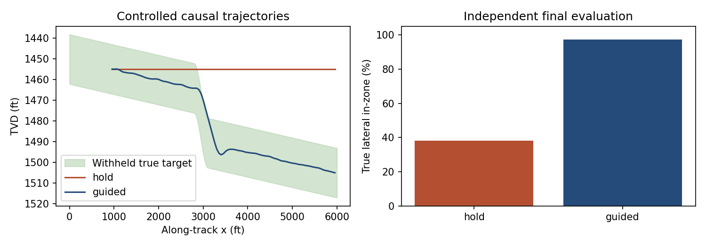

01Scientific software

GeoSteering
A synthetic training workbench with shared-coordinate geology, progressive observations, immutable decisions, and a controlled causal steering comparison.
38.1% HOLD versus 97.2% guided in-zone length on the same synthetic 5,000-ft lateral, using a known signed sensor calibration in one scenario and seed.
Local synthetic evidence · public source · field performance unvalidated